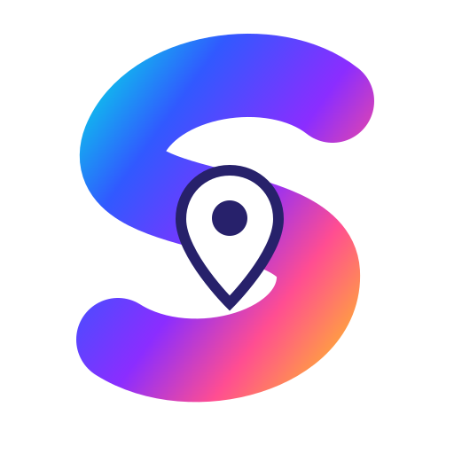

SIDEWALK
YOUR CITY. NEW STORIES.
✦ EXPLORE MORE
Something amazing
is nearby.
is nearby.
Discover unique places, real stories and great experiences around you.
Waiting for location
V3.5 INTERNATIONAL BETA · EXPLORE MORE
📍 My location
Current address
—
Country
—
✨ Something amazing is nearby.
Discover unique places, real stories and surprises around you.
✨ Finding something special...Discovering places around you
Waiting for your location to discover nearby places...
Discoveries update while the app is open.
⚙️ Manual search & advanced settings
Search by category & distance
⚙️ Search settings & diagnostics
Primary source: Geoapify via Supabase (API key stays on the server). Overpass is a fallback.
No search yet.
Waiting for location.
The marker updates when your device reports a new location.
The circle indicates approximate GPS accuracy.